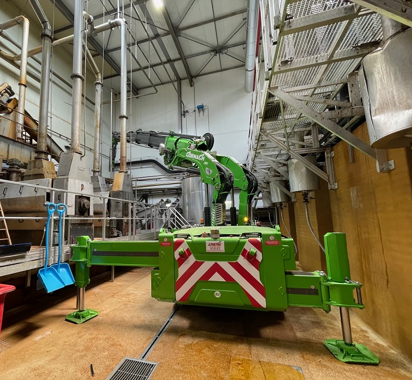
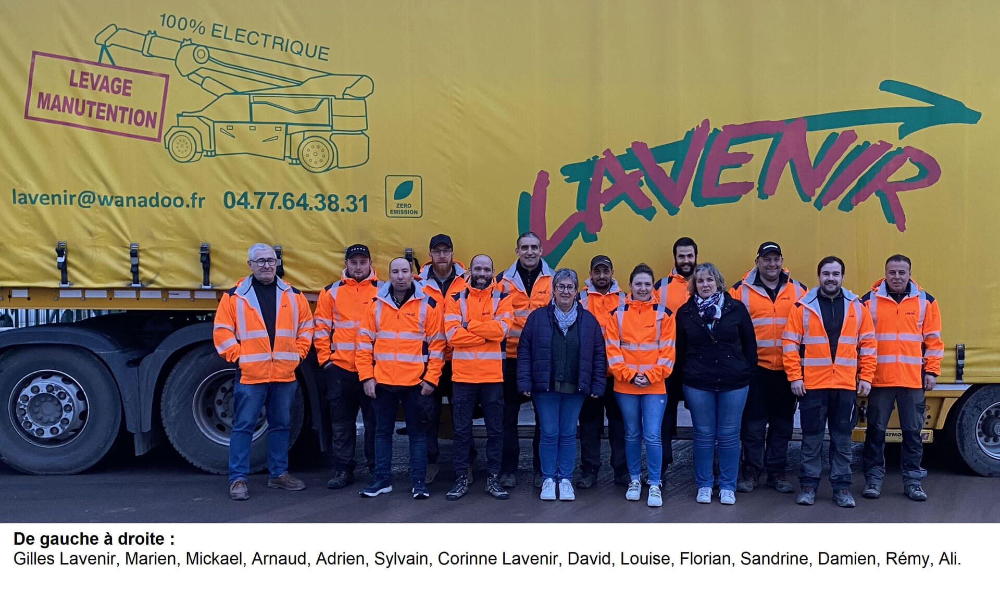

Levage & Manutention
Manutentions tous tonnages et minutieuses — machines industrielles, spas, coffres et armoires fortes. Démontage, transport et pose de ponts roulants et de portiques.
Décrire mon opérationNous soulevons pour vous en toutes situations.
Nos interventions
Une charge, un accès, une portée : en quatre questions, l'outil parcourt le parc réel de l'entreprise et propose les moyens qui répondent au cas décrit — avec le raisonnement affiché, pas seulement le résultat.
Grues mobiles avec opérateur, mini-grues électriques en location sans opérateur, camions-grue, chariots, nacelles et matériel de manutention : le parc couvre du colis de quelques centaines de kilos à la charge de 150 tonnes.
Le type d'opération détermine la famille de matériel avant tout le reste.
Le poids de l'élément le plus lourd de l'opération, accessoires de levage compris.
C'est l'accès, plus que le poids, qui écarte ou impose une famille de matériel.
La portée se mesure du point de stationnement de l'engin jusqu'à l'aplomb de la charge.
Nos interventions
Si les métiers historiques de l'entreprise, près de Roanne, sont la vente de poids-lourds et d'engins TP d'occasion, Lavenir a intégré au fil des années le levage, la manutention, le déménagement et le stockage industriel, ainsi que la location de mini-grues électriques.
Manutentions tous tonnages et minutieuses — machines industrielles, spas, coffres et armoires fortes. Démontage, transport et pose de ponts roulants et de portiques.
Décrire mon opérationLevage propre, silencieux, sans pollution. Treize modèles radiocommandés, de 2,5 à 65 tonnes, en location sans opérateur.
Voir les modèlesUn espace de stockage sécurisé, l'installation de nouvelles machines-outils, le déménagement de bureaux et le transfert complet d'atelier.
Organiser un transfertVotre partenaire poids-lourds. Achat et vente de véhicules légers, poids-lourds et engins de travaux publics — le métier d'origine de la maison.
Voir les véhiculesNotre matériel
Un matériel constamment renouvelé, parfaitement adapté et conforme aux normes actuelles. Filtrez par famille ou par tonnage pour retrouver la machine qui correspond à votre besoin.
Location de mini-grue
Toutes les mini-grues mobiles électriques du parc sont radiocommandées et se louent sans opérateur. Elles passent là où une grue n'entre pas : intérieur de bâtiment, accès restreint, maintenance industrielle, pose de vitrages ou d'éléments de structure, déplacement de matériel. Flèche de 5,50 m sur la plus petite à 9,00 m sur la plus grande, jusqu'à 28 mètres de hauteur avec les extensions hydrauliques, et des fourches en option sur certains modèles.
Capacités indiquées selon la désignation constructeur JMG.
Voir quel modèle convient
Zone d'intervention
Le matériel permet d'assurer les prestations sur toute la région Auvergne-Rhône-Alpes, mais aussi sur la France entière pour les opérations qui le demandent.
1075, Route de Paris — BP 22
42310 La Pacaudière

La société
Sous la direction de Corinne et Gilles Lavenir, l'entreprise a poursuivi ses activités d'origine — l'achat et la vente de véhicules légers, de poids-lourds et d'engins de travaux publics — tout en intégrant le levage, la manutention, le déménagement et le stockage industriel, puis la location de mini-grues électriques.
Plus de dix salariés y travaillent, avec un recrutement permanent de personnels qualifiés. Les interventions sont effectuées en toute sécurité, en milieu industriel comme en dehors.
Une demande ?
Un poids, un accès, une date : c'est souvent tout ce qu'il faut pour vous dire si l'opération est faisable et avec quel moyen. Si vous avez utilisé l'orientation ci-dessus, collez le récapitulatif dans le message.
1075, Route de Paris — BP 22, 42310 La Pacaudière
04 77 64 38 31 · contact@ets-lavenir.com
ZAC Près de la Grande Route, 03120 Lapalisse
04 70 31 23 64 · ets-lavenir@orange.fr
Grutiers, chauffeurs, personnels de manutention : les candidatures sont étudiées toute l'année.
Formulaire de démonstration : aucun message n'est envoyé depuis cette maquette.